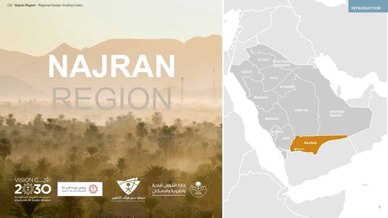

Jazan City for Primary and Downstream Industries
Industrial project · Jazan, Saudi Arabia
Planning for Jazan City for Primary and Downstream Industries, for the Royal Commission for Jubail & Yanbu, with AECOM.
Partners

Client
Royal Commission for Jubail & Yanbu
More from Jazan
2013Jazan Economic CityJazan · 2013-20162022AlUla Strategic Framework PlanAlUla · 2022 Project Line Concept Master Plan (Al Khafji)Al Khafji · 2021
Project Line Concept Master Plan (Al Khafji)Al Khafji · 2021

Architectural Design Guidelines for Najran and the Northern Border RegionNajran and the Northern Border Region · 2022Project Line Concept Master Plan (Al Khafji)Al Khafji · 2021